Lektion 01
Einführung
Ein Takt kann Viertel, Achtel, Sechzehntel und Triolen verbinden. Jede Gruppe füllt ihren Anteil am Schlag; der Viertelpuls bleibt das gemeinsame Gerüst.
Das lernst du.
Du liest und spielst gemischte Gruppen und wechselst innerhalb eines Takts sicher zwischen zwei, drei und vier Positionen pro Schlag.
Der Puls bleibt gleich: Klopfe die Viertel mit dem Fuß und sprich die Unterteilungen laut mit.
Beispiel im 4/4-Takt
Die Notation zeigt, wie die Unterteilungen auf vier gleichmäßige Viertelschläge verteilt sind.
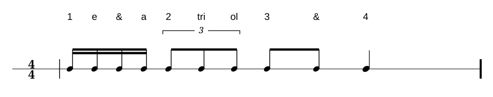
Audio · Beispiel im 4/4-Takt
Beispiel im 4/4-Takt in Google Drive öffnen ↗Lektion 02
Lesen
Lies die Unterteilungen laut, während du den Viertelpuls mit dem Fuß klopfst.
Leseübung 1
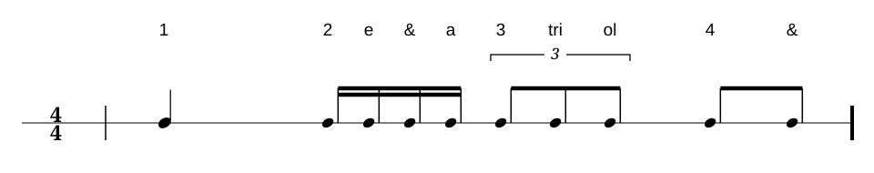
Audio · Leseübung 1
Leseübung 1 in Google Drive öffnen ↗Leseübung 2
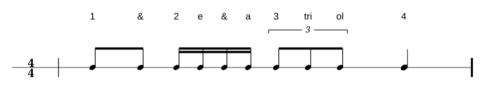
Audio · Leseübung 2
Leseübung 2 in Google Drive öffnen ↗Leseübung 3
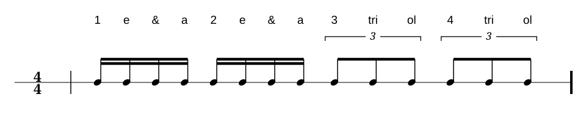
Audio · Leseübung 3
Leseübung 3 in Google Drive öffnen ↗Lektion 03
Hören
Höre auf den Wechsel der Unterteilungen und zähle den Viertelpuls weiter.
Höraufgabe 1
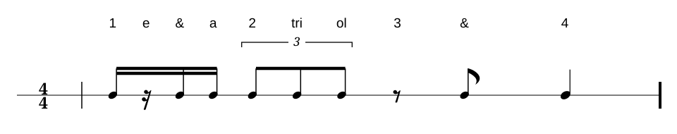
Audio · Höraufgabe 1
Höraufgabe 1 in Google Drive öffnen ↗Höraufgabe 2
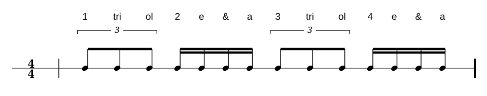
Audio · Höraufgabe 2
Höraufgabe 2 in Google Drive öffnen ↗Höraufgabe 3
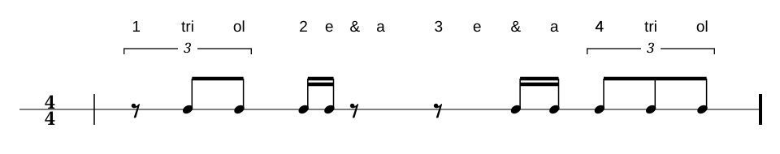
Audio · Höraufgabe 3
Höraufgabe 3 in Google Drive öffnen ↗Lektion 04
Fehler finden
Vergleiche die gehörte Aufnahme mit der notierten Unterteilung.
Fehler finden 1
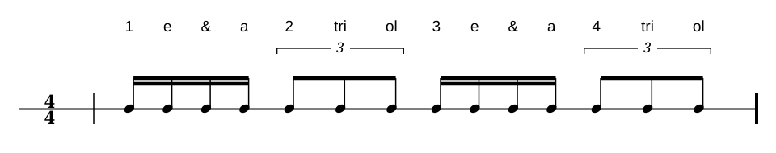
Audio · Fehler finden 1
Fehler finden 1 in Google Drive öffnen ↗Lösungshilfe
Auf Schlag 1 ist eine Achtelpause zu hören. Auf Schlag 2 ist die erste Position der Triole eine Pause; „tri“ und „ol“ erklingen. Auf Schlag 3 liegt eine halbe Pause, die bis zum Ende von Schlag 4 reicht.
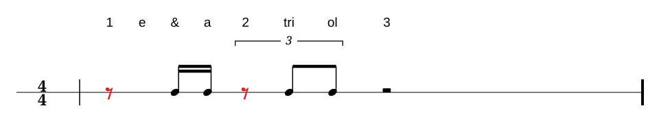
Fehler finden 2
Audio · Fehler finden 2
Fehler finden 2 in Google Drive öffnen ↗Lösungshilfe
In der Audiodatei ist die Triole auf Schlag 3 vollständig. Auf „ol“ ist keine Pause zu hören.
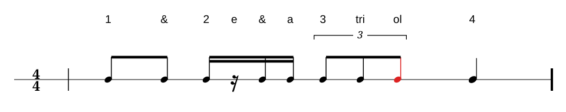
Fehler finden 3
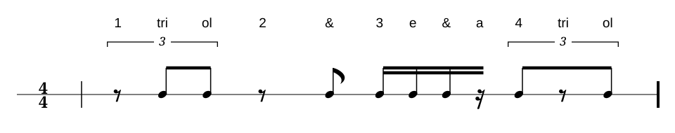
Audio · Fehler finden 3
Fehler finden 3 in Google Drive öffnen ↗Lösungshilfe
In der Audiodatei ist auf Schlag 3e zusätzlich eine Sechzehntelpause zu hören.
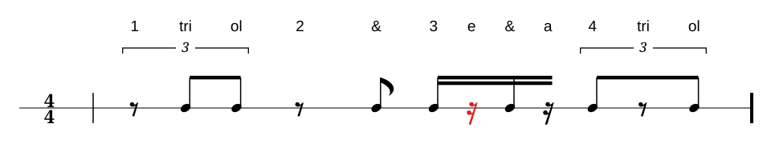
Lektion 05
Selber schreiben und spielen
Schreibe eigene Takte mit den Unterteilungen dieses Kapitels und spiele sie bei gleichmäßigem Puls.
Schreib- und Spielaufgaben folgen.